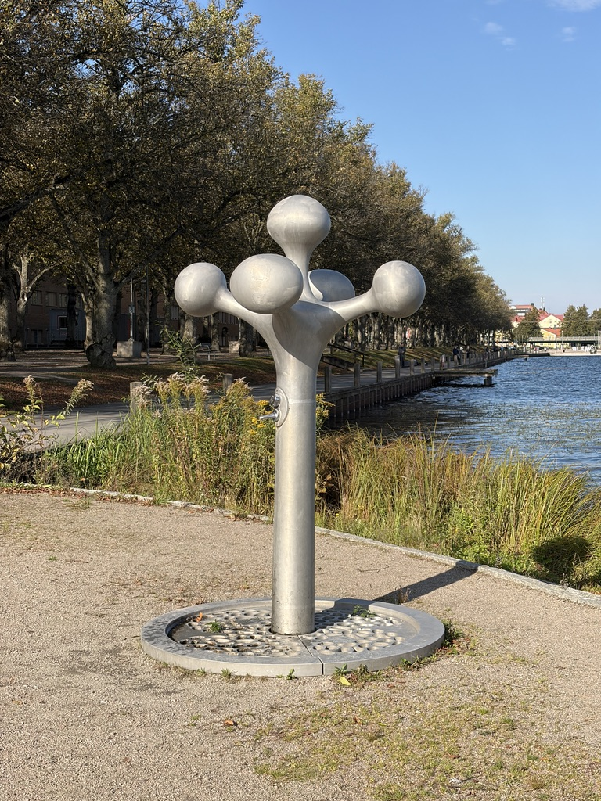
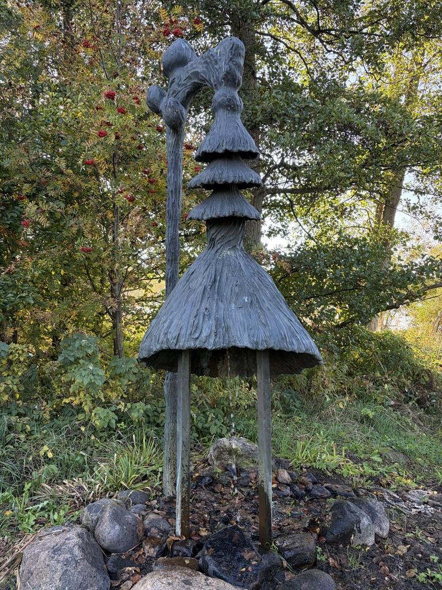

01 / POPULÄR RUTT

Statyrundan
Historiska personer och berättelser mitt i Växjö.
Upptäck offentlig konst i din egen takt. Välj en vandring som passar dig.
01 / POPULÄR RUTT

Historiska personer och berättelser mitt i Växjö.
02 / KORTARE VANDRING

Färgstarka verk och spännande konstnärliga uttryck i centrum.
03 / LÄNGRE VANDRING
En upptäcktsfärd bland konstverk söder om stadskärnan.
04 / MEDELLÅNG VANDRING
Skulpturer och konstverk i den östra delen av Växsjö.